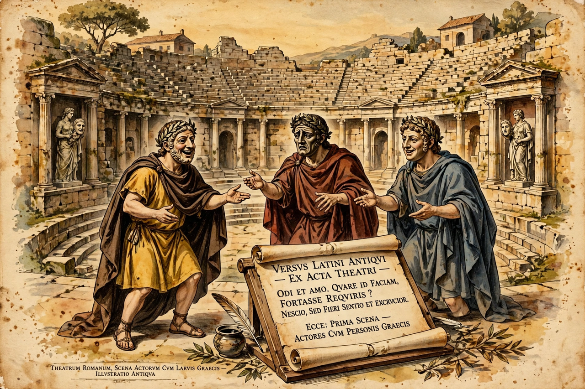

From Wikipedia, the free encyclopedia
| Born | c. 284 BC Tarentum (modern Taranto) |
|---|---|
| Died | c. 204 BC Rome |
| Occupation | Poet, playwright, translator |
| Language | Latin, Greek |
| Notable works | Odusia (translation of the Odyssey) |
Lucius Livius Andronicus (c. 284 – c. 204 BC) was a Greco-Roman dramatist and epic poet of the Old Latin period. He began as a translator of Greek works into Latin, including the first complete translation of Homer's Odyssey. He is regarded as the founder of Roman literature and the first named Latin author.

Livius Andronicus brought Greek literature to Rome.
According to tradition, Livius was a Greek captured when Rome took Tarentum in 272 BC and brought to Rome as a slave. He took the name of his master, a member of the Livian family, and after being freed worked as a teacher of Greek and Latin. In 240 BC he produced the first Latin plays adapted from Greek models at the Ludi Romani (Roman Games), a date ancient scholars treated as the beginning of Latin literature. In 207 BC, during the Second Punic War, he composed a hymn to Juno sung by a choir of maidens, and in honour of this work the Roman state granted poets and actors a guild, the collegium scribarum histrionumque, based at the temple of Minerva on the Aventine.
Livius wrote tragedies on Greek mythological subjects (including Achilles, Aegisthus and Equus Troianus, "The Trojan Horse") and comedies adapted from Greek New Comedy. Only fragments survive. His most influential work was the Odusia, a translation of Homer's Odyssey into the native Latin Saturnian metre, opening "Virum mihi, Camena, insece versutum" ("Tell me, Camena, of the versatile man"). The Odusia became a school text and remained in use for centuries; Horace remembered studying it at school.
Although later Roman critics such as Cicero found his work crude, Livius Andronicus effectively created Latin poetry in every major genre — epic, tragedy and comedy — and his translations established the pattern by which Roman literature defined itself against Greek models.